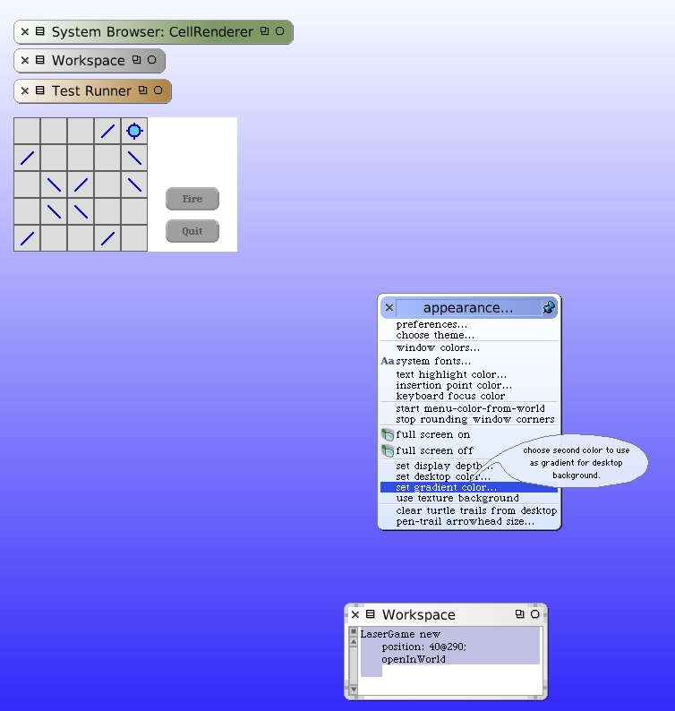

Before proceeding, let's take a small diversion. I decided to modify the background color of my World. This was done for two reasons, actually. First, I wanted to see the outlined edges of the LaserGame morph we are developing (at least until we put borders around it); Second, I wanted a little visual variety.
This page describes an optional step. It is not necessary for the development of our game. If you would rather, you can skip to the next page.
It's probably a good time to step back and see the World as I have it laid out. I set the background to a nice gradient using the "appearance" sub-menu of the World menu.
I keep the Test Runner around, just minimized. You can also see the convenient workspace I'm using to open new instances of the LaserGame morph. My Squeak window is much wider than the image shown here. Like they say on TV Movies, "This program has been modified for format and content".